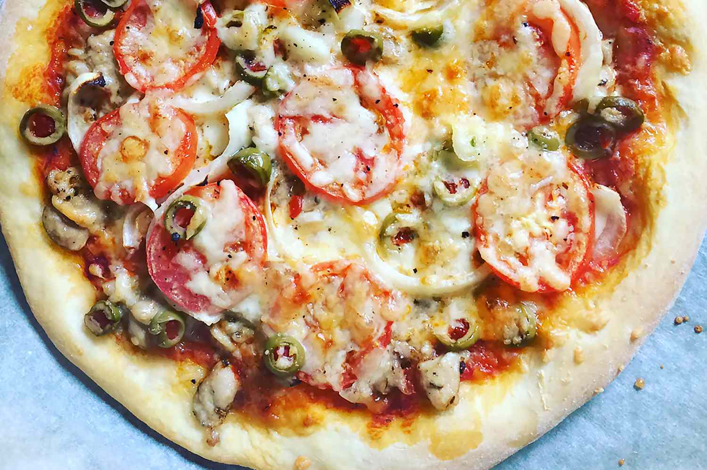

Pizza

A cheese pizza is a classic pizza that is simple yet delicious. It typically consists of a round, flat pizza crust that is topped with tomato sauce and a generous amount of melted cheese. The most common type of cheese used is mozzarella, which has a mild flavor and a smooth, creamy texture when melted. The cheese is usually evenly spread over the pizza, covering the sauce and extending all the way to the crust.
Ingredients
- Pizza dough
- Tomato sauce or pizza sauce
- Cheese (mozzarella is the most common choice, but you can use other types like provolone or fontina as well)
Optional
- Olive oil
- Garlic
- Italian herbs (oregano, basil, thyme)
- Red pepper flakes
Steps
- Preheat your oven to 450°F (230°C).
- Roll out your pizza dough on a floured surface to your desired thickness and shape.
- Spread tomato sauce or pizza sauce evenly over the dough, leaving about a 1/2 inch border around the edges.
- Sprinkle your desired amount of cheese over the sauce, making sure to cover the sauce completely.
- Add any additional toppings you like, such as vegetables or meats.
- Optional: Drizzle olive oil over the top of the pizza and sprinkle garlic, Italian herbs, and/or red pepper flakes on top.
- Bake the pizza in the preheated oven for 10-12 minutes or until the cheese is melted and bubbly, and the crust is golden brown.
- Remove from the oven and let the pizza cool for a few minutes before slicing and serving.
Return to main page